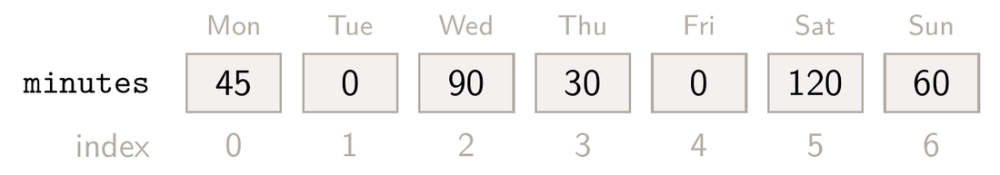
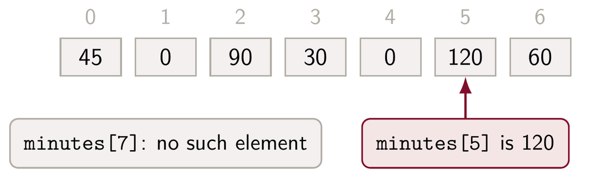
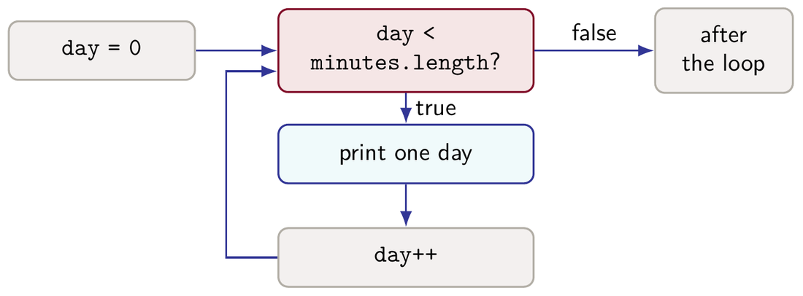
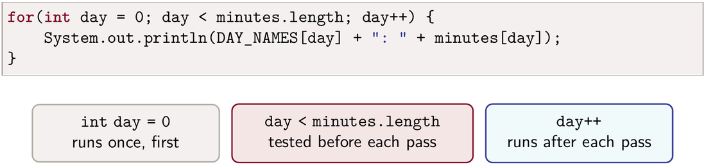
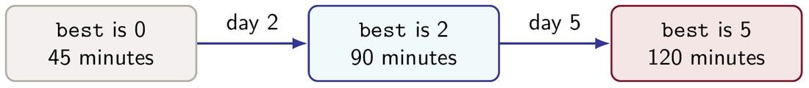

Lecture 12 Workbook
This workbook holds the notes and the questions for Lecture 12. Each section starts with notes that explain everything on the slides, and a little more. Answer the questions as we discuss the slides. Sections 4 and 8 are a coding problem in two parts, a row of theatre seats, to do at home as practice; the notes there say everything the classes need. Section 10 has two complete programs to write after class, and the lecture summary at the end is a short review for tests. By the end, you should be able to:
- say when an array suits a job better than an
ArrayList; - declare and create an array, and give the default values of its elements;
- read and change elements by index, use
length, and avoid an index out of bounds; - write a
forloop, and rewrite it as awhileloop; - total, count and find the largest element of an array with a for-each or a
forloop, and choose between them; and - write complete programs that keep a fixed number of values in an array.
1. Fixed size
A week of study
Lecture 11 ended with the library's visitor counts, one number for each day of the week. A week always has seven days, so that collection never grows or shrinks. A student's study log has the same shape. Suppose a student writes down how many minutes they study each day. Every example in this workbook uses this week:
| Day | Mon | Tue | Wed | Thu | Fri | Sat | Sun |
|---|---|---|---|---|---|---|---|
| Minutes | 45 | 0 | 90 | 30 | 0 | 120 | 60 |
The student studied on five days, 345 minutes in all, and Saturday was the busiest day. On Tuesday and Friday nothing was recorded.
Arrays
We could keep these numbers in an ArrayList<Integer>, but a list is built to grow, and this one never will. Java has a simpler collection for a fixed number of values: the array. An array holds a fixed number of values of one type. Each value is an element, and each element has an index, starting at 0.

minutes for our week.Day 0 is Monday and day 6 is Sunday. The size is chosen when the array is created, and it never changes. An array has no add or remove: a week of seven days stays seven days, and each day's value can only be changed.
Primitive and object elements
An ArrayList holds only objects, so a list of numbers holds Integer objects (Lecture 10). An array can hold primitive values such as int or boolean directly:
ArrayList<Integer> list = new ArrayList<>(); // holds Integer objects
int[] minutes = new int[7]; // holds int valuesAn array can also hold objects. String[] is an array of strings. Arrays of objects of our own classes come in Lecture 13.
1.1 For each job, would you use an array or an ArrayList? Give a reason.
- The temperature at each hour of one day.
- The names of students who join a course's waiting list during the term.
- The marks for the five assignments of a course.
1.2 Which of these declarations compile? For any that does not, say why.
| Declaration | Compiles? |
|---|---|
ArrayList<int> a; | |
ArrayList<Integer> b; | |
int[] c; | |
Integer[] d; |
Why does the one that fails not compile?
2. Creation
Declaration and creation
An array variable is declared with square brackets after the type, and the array itself is created with new:
int[] minutes; // declares an array variable
minutes = new int[7]; // creates an array of 7 intsint[] is the type “array of int”. int is the base type, the type of every element. new int[7] creates the array. The size goes in square brackets, and there is no constructor call with round brackets. The size can be any int expression, such as a parameter, but once the array exists its size is fixed.
In a class, the field is declared and the constructor creates the array, as WeekLog does:
private int[] minutes;
public WeekLog()
{
minutes = new int[7];
}An array reference
An array is an object. The variable minutes holds a reference to it, as a variable of a class type does. A declaration alone creates no array:
int[] minutes;
minutes[0] = 45;For a local variable, the compiler reports variable minutes might not have been initialized. A field that is never given an array holds null, and minutes[0] then stops the program with a NullPointerException. That is why the WeekLog constructor creates the array.
Default values
A new array is not empty. Every element starts with a default value: numbers start at 0, boolean elements at false, and object elements, such as the elements of a String[], at null. A new study log is already seven zeros, so a day that is never recorded stays 0.
Array literals
When we know the values in advance, an array literal creates and fills the array in one step:
int[] sample = {45, 0, 90, 30, 0, 120, 60};
System.out.println(sample.length);The values go in braces, separated by commas. Java counts them to choose the size, so this array has 7 elements and the code prints 7. This short form works only in the declaration of the variable. Later, a new set of values needs new, as in sample = new int[] {1, 2, 3};.
2.1 Write one line for each.
| Task | Line |
|---|---|
(a) A local variable rainfall that refers to a new array of 12 double values. | |
(b) The line in a constructor that gives the field names, of type String[], a new array of 4 strings. |
2.2 Each line has a mistake, and none of them compiles. Say what is wrong and write the line correctly.
int[] a = new int(7);
int[] b = new int[];
int[] c; c = {1, 2, 3};2.3 What does each println print? What happens at the last line?
int[] counts = new int[3];
boolean[] open = new boolean[2];
String[] names = new String[2];
System.out.println(counts[2]);
System.out.println(open[1]);
System.out.println(names[0]);
System.out.println(names[0].length());| Line | Printed |
|---|---|
| 1 | |
| 2 | |
| 3 |
What happens at the last line?
2.4 Write an array literal monthDays that holds the number of days in each month of a year that is not a leap year, January first. Then give the values of monthDays.length, monthDays[1] and monthDays[monthDays.length - 1].
| Your line | |
|---|---|
| the literal |
| Expression | Value |
|---|---|
monthDays.length | |
monthDays[1] | |
monthDays[monthDays.length - 1] |
3. Positions
Indexing and bounds
We read or change one element by putting its index in square brackets: minutes[2] is Wednesday's 90. For an array of length 7, the valid indices are 0 to 6. An index of 7 or −1 still compiles, because the compiler does not know which values the index will have. When the line runs, Java checks the index and stops the program with an ArrayIndexOutOfBoundsException.

An element as a variable
Each element can be used wherever a variable of the base type can, on either side of =:
int[] minutes = new int[7];
minutes[2] = 90;
minutes[5] = 100;
minutes[5] += 20;
System.out.println(minutes[2] + minutes[5]);Element 5 becomes 100 and then 120, so the code prints 210. The other five elements are still 0.
Checking a day number
WeekLog's record method stores the minutes for one day. It checks the day number first, so a bad one cannot stop the program:
public void record(int day, int mins)
{
if(day >= 0 && day < minutes.length) {
minutes[day] = mins;
}
else {
System.out.println("No such day: " + day);
}
}record(5, 120) stores 120 as element 5. record(7, 15) prints No such day: 7 and changes nothing. Recording a day a second time replaces its old value.
Array length
minutes.length is the number of elements. It is a field of the array, so it has no round brackets, and it can never change. The test in record uses it, so the method would still be right if the array had a different size. Three kinds of collection give their size in three ways:
| Type | Number of items | Example |
|---|---|---|
String | a method, length() | name.length() |
ArrayList | a method, size() | list.size() |
| array | a field, length | minutes.length |
Writing minutes.length() does not compile: the compiler reports cannot find symbol, because an array has no method length().
Day names
A second array, of strings, holds the name of each day:
private static final String[] DAY_NAMES = {"Monday", "Tuesday",
"Wednesday", "Thursday", "Friday", "Saturday", "Sunday"};DAY_NAMES is a lookup table: one index finds the name in one array and the minutes in the other. DAY_NAMES[2] is "Wednesday" and minutes[2] is 90. It is a class constant, as in Lecture 11: every WeekLog shares one copy. A class method gives other classes the name of a day:
public static String dayName(int day)
{
return DAY_NAMES[day];
}3.1 A field readings refers to new int[24]. What are the first and last valid indices? Write the last index as an expression that uses length.
| Answer | |
|---|---|
| first valid index | |
| last valid index | |
last index, using length |
3.2 After int[] a = new int[5];, which of these compile? Which of them stop the program when they run?
| Access | Compiles? | Stops the program? |
|---|---|---|
a[0] | ||
a[5] | ||
a[a.length - 1] | ||
a[-1] | ||
a[a.length] | ||
a[2 + 2] |
3.3 Write the four elements of a after this code runs.
int[] a = new int[4];
a[1] = 3;
a[2] = a[1] * 2;
a[3] += a[2];
a[0] = a[3] - a[1];| Index | 0 | 1 | 2 | 3 |
|---|---|---|---|---|
a |
3.4 name is a String, list is an ArrayList<String> and minutes is an int[]. Which of these compile? Correct the others.
| Expression | Compiles? | Correct form |
|---|---|---|
minutes.size() | ||
name.length | ||
minutes.length | ||
list.length() |
3.5 What does WeekLog.dayName(5) return? What happens with WeekLog.dayName(7)?
| Call | Returns |
|---|---|
WeekLog.dayName(5) |
What happens with dayName(7)?
4. Seats Part 1: A row of seats
The problem
This part is practice for after class. A theatre sells seats in rows. Write a class SeatRow for one row, and a class SeatDemo that tries it out. Seat 0 is at the aisle.
- A field
private boolean[] booked. The constructorSeatRow(int size)creates it withsizeelements, so every seat starts free (false). int getSize()returns the number of seats.boolean isBooked(int seat)says whether one seat is booked. It may assume the seat exists.boolean book(int seat)returnsfalsefor a seat that does not exist or is already booked. Otherwise it books the seat and returnstrue.SeatDemo.mainmakes a row of 10 seats and prints its size. It books seat 3, books seat 3 again, tries seat 10, then prints whether seats 3 and 4 are booked.
The row needs no counter of booked seats: the array already holds one true or false for every seat.
4.1 Write the class header, the field, the constructor and getSize.
The checking program makes rows of 10 and 0 seats and prints each size. Its expected output is:
10 0
4.2 Write isBooked and book. Then predict the six lines this demo prints.
public class SeatDemo
{
public static void main(String[] args)
{
SeatRow row = new SeatRow(10);
System.out.println("Seats: " + row.getSize());
System.out.println("Book 3: " + row.book(3));
System.out.println("Book 3 again: " + row.book(3));
System.out.println("Book 10: " + row.book(10));
System.out.println("Seat 3 booked: " + row.isBooked(3));
System.out.println("Seat 4 booked: " + row.isBooked(4));
}
}| Line | Printed |
|---|---|
| 1 | |
| 2 | |
| 3 | |
| 4 | |
| 5 | |
| 6 |
The box holds SeatRow with the field, the constructor and getSize written. Its checking program tries seats −1, 0, 0 again, 4 and 5 in a row of 5, then asks whether seats 0 and 1 are booked. Expected output:
Book -1: false Book 0: true Book 0 again: false Book 4: true Book 5: false Seat 0 booked: true Seat 1 booked: false
5. For loops
The for loop
To visit every element, we count through the indices. The for loop puts the counting in one line:
for(int day = 0; day < minutes.length; day++) {
System.out.println(DAY_NAMES[day] + ": " + minutes[day]);
}The header has three parts, separated by semicolons:
- the initialization,
int day = 0, runs once, before anything else; - the condition,
day < minutes.length, is tested before each pass, and the loop ends as soon as it is false; - the update,
day++, runs after each pass.
A pass of the body is one run of the statements in braces.
The while form
The same loop, written with while as in Lecture 7:
int day = 0;
while(day < minutes.length) {
System.out.println(DAY_NAMES[day] + ": " + minutes[day]);
day++;
}Both loops do the same steps in the same order. The for loop keeps the start, the test and the update together, so the update is hard to forget. A variable declared in the for header exists only inside the loop; after the loop, day is no longer known. In the while form, day is still there after the loop, holding 7.
Loop control flow

for loop.The condition is tested before every pass, including the first. When day reaches 7, the test is false and the loop ends, so the body runs for days 0 to 6 only. If the condition is false at the start, the body never runs.
Off by one
This loop has <= where it needs <:
int[] minutes = {45, 0, 90, 30, 0, 120, 60};
for(int day = 0; day <= minutes.length; day++) {
System.out.println(minutes[day]);
}It compiles and prints all seven values. Then day becomes 7, the test 7 <= 7 is true, and minutes[7] throws an ArrayIndexOutOfBoundsException. The last valid index is length - 1, so the standard loop over an array a is for(int i = 0; i < a.length; i++): start at 0 and test with <.
Counting down
A for loop can count in any direction, and by any step. This one visits the week backwards:
for(int day = minutes.length - 1; day >= 0; day--) {
System.out.print(minutes[day] + " ");
}It starts at the last index, 6, and prints 60 120 0 30 90 0 45. The loop ends when day becomes −1. An update such as day += 2 visits every second element.
5.1 In the header below, row is a SeatRow of 10 seats. Name the three parts. What is seat on the first pass and on the last pass, and how many times does the body run?
for(int seat = row.getSize() - 1; seat >= 0; seat--)| Part | Answer |
|---|---|
| initialization | |
| condition | |
| update | |
seat on the first pass | |
seat on the last pass | |
| number of passes |
5.2 What does this loop print? Rewrite it as a while loop that prints the same.
for(int i = 1; i <= 5; i++) {
System.out.print(i * i + " ");
}| Printed | |
|---|---|
| the loop prints |
Replace the for loop in the box with a while loop that prints the same.
5.3 This code should add up the seven elements of minutes. It has two mistakes. What happens when it runs? Correct the header.
int sum = 0;
for(int day = 1; day <= minutes.length; day++) {
sum += minutes[day];
}| Corrected header | |
|---|---|
| header |
5.4 Trace this loop over our week. Fill in i and sum at the end of each pass, then say why the loop stops.
int sum = 0;
for(int i = 0; i < 6; i += 2) {
sum += minutes[i];
}| Pass | 1 | 2 | 3 |
|---|---|---|---|
i | |||
sum |
Why does the loop stop?
6. Reports
Printing every day
printWeek prints each day's name and minutes:
public void printWeek()
{
for(int day = 0; day < minutes.length; day++) {
System.out.println(DAY_NAMES[day] + ": " + minutes[day]);
}
}For our week it prints seven lines, from Monday: 45 to Sunday: 60. The loop uses day twice, to find the name and the minutes, so it needs the index.
Total minutes
Arrays work in a for-each loop, as lists do:
public int total()
{
int sum = 0;
for(int mins : minutes) {
sum += mins;
}
return sum;
}mins takes each element's value in turn, from index 0 to 6. The total does not need to know which day is which, so a for-each loop is enough. For our week it returns 345.
Days studied
Counting is the same loop with a test inside:
public int daysStudied()
{
int count = 0;
for(int mins : minutes) {
if(mins > 0) {
count++;
}
}
return count;
}A day with 0 minutes is a day with no study, so it is not counted. For our week the method returns 5: Tuesday and Friday are left out. The table traces both loops; each column is one pass.
mins | 45 | 0 | 90 | 30 | 0 | 120 | 60 |
|---|---|---|---|---|---|---|---|
sum | 45 | 45 | 135 | 165 | 165 | 285 | 345 |
count | 1 | 1 | 2 | 3 | 3 | 4 | 5 |
sum grows by every value. count grows only when the value is more than 0, so the two zero days leave it unchanged.
For-each limits
The for-each variable holds a copy of the element. Changing it does not change the array:
int[] minutes = {45, 0, 90, 30, 0, 120, 60};
for(int mins : minutes) {
mins = mins * 2;
}
System.out.println(minutes[0]);This prints 45. To change the elements, use an index: minutes[day] = minutes[day] * 2 inside a for loop. A for-each loop also has no index, so it cannot say which day a value belongs to.
The busiest day
public int busiestDay()
{
int best = 0;
for(int day = 1; day < minutes.length; day++) {
if(minutes[day] > minutes[best]) {
best = day;
}
}
return best;
}The method returns a day number, not minutes, so it needs the index. Day 0 is the best so far before the loop starts, so the loop begins at day 1. Because the test is >, the first of two equal days stays the best. For our week, best becomes 2 at Wednesday (90 beats 45) and 5 at Saturday (120 beats 90). Thursday, Friday and Sunday do not beat the best so far, so the method returns 5.
Zero days
Suppose we change > to < to find the quietest day. The method returns 1, Tuesday, with 0 minutes. The code does what it says, but this is probably not the answer we wanted. A 0 in this array means “no study that day”, not “a short study session”. The array cannot tell us whether the student rested or forgot to record the day. To find the quietest day with some study, the loop must skip the zeros. Start with no best day (−1), ignore days with 0 minutes, and keep the smallest of the rest. For our week that is day 3, Thursday, with 30 minutes.
Choosing a loop
| Loop | Use it when | Examples |
|---|---|---|
| for-each | every element is visited and its position does not matter | total, daysStudied |
for | the index is needed: two arrays, a changed element, a position as the answer, or another order | printWeek, busiestDay, counting down |
while | the number of passes is not known in advance | a search that stops at the first match (Lecture 7) |
Any of the three can be rewritten as another. Choose the one that says most plainly what the loop is for.
6.1 Write a WeekLog method int daysOver(int limit) that returns the number of days with more than limit minutes. What does it return for our week with limit 60? With limit 0?
| Call | Returns |
|---|---|
daysOver(60) | |
daysOver(0) |
The box holds the rest of WeekLog. Its checking program records our week and prints daysOver for 60, 0 and 200, then for a new log. Expected output:
2 5 0 0
6.2 minutes holds our week. What do the two println lines print?
int total = 0;
for(int mins : minutes) {
mins += 10;
total += mins;
}
System.out.println(total);
System.out.println(minutes[1]);| Line | Printed |
|---|---|
| 1 | |
| 2 |
Why is minutes[1] unchanged?
6.3 Another week has the minutes {30, 60, 60, 0, 90, 90, 10}. Trace busiestDay: write best after each pass. What does it return? What would it return if the test were >=?
day | 1 | 2 | 3 | 4 | 5 | 6 |
|---|---|---|---|---|---|---|
best |
| Returns | |
|---|---|
with > | |
with >= |
Why is the call WeekLog.dayName(week.busiestDay()) always safe?
6.4 Write int quietestStudiedDay(). It returns the day with the fewest minutes among the days with more than 0, or −1 when no day has any study. What does it return for our week, and for a new WeekLog?
| Log | Returns |
|---|---|
| our week | |
a new WeekLog |
The box holds the rest of WeekLog. Its checking program tries our week, a new log, and a week whose only study is 50 minutes on Wednesday and on Friday. Expected output:
3 -1 2
7. One week
Final arrays
This section puts WeekLog together. Its constant DAY_NAMES is final, so it always refers to the same array. As with the final list in Lecture 11, the elements can still change. Inside a WeekLog method, the line DAY_NAMES[0] = "Mon"; compiles, and it changes the name of day 0 for every WeekLog. Only DAY_NAMES = new String[7]; is refused. That is why the array is private: only WeekLog's own methods can reach it, and none of them change it.
Arrays and lists
| Array | ArrayList | |
|---|---|---|
| Size | fixed when created | grows and shrinks |
| Elements | primitives or objects | objects only |
| Read one | minutes[5] | list.get(5) |
| Change one | minutes[5] = 120 | list.set(5, 120) |
| Number of items | minutes.length | list.size() |
| Add or remove | not possible | add, remove |
An array suits a collection whose size is known when it is created and never changes: the days of a week, the hours of a day, the seats in a row. When items come and go, a list is the better choice.
The complete class
Here is all of WeekLog, with its Javadoc comments left out to save space:
public class WeekLog
{
private static final String[] DAY_NAMES = {"Monday", "Tuesday",
"Wednesday", "Thursday", "Friday", "Saturday", "Sunday"};
private int[] minutes;
public WeekLog()
{
minutes = new int[7];
}
public void record(int day, int mins)
{
if(day >= 0 && day < minutes.length) {
minutes[day] = mins;
}
else {
System.out.println("No such day: " + day);
}
}
public int getMinutes(int day)
{
return minutes[day];
}
public static String dayName(int day)
{
return DAY_NAMES[day];
}
public void printWeek()
{
for(int day = 0; day < minutes.length; day++) {
System.out.println(DAY_NAMES[day] + ": " + minutes[day]);
}
}
public int total()
{
int sum = 0;
for(int mins : minutes) {
sum += mins;
}
return sum;
}
public int daysStudied()
{
int count = 0;
for(int mins : minutes) {
if(mins > 0) {
count++;
}
}
return count;
}
public int busiestDay()
{
int best = 0;
for(int day = 1; day < minutes.length; day++) {
if(minutes[day] > minutes[best]) {
best = day;
}
}
return best;
}
}Recording the week
WeekLogDemo records our week and prints the reports. Days 1 and 4 are never recorded, and day 7 does not exist. Its output is below the code; press Run to run it yourself.
record(7, 15) is refused before anything else is printed. Tuesday and Friday print 0, the default value, because they were never recorded. The total and the count come from for-each loops. The busiest day needs the index, so it uses a for loop. dayName is a class method, so the demo calls it on the class, WeekLog.dayName(best).
7.1 Predict everything this second demo prints.
public class SecondWeekDemo
{
public static void main(String[] args)
{
WeekLog week = new WeekLog();
week.record(1, 30);
week.record(1, 60);
week.record(4, 60);
week.record(-1, 20);
week.record(6, 15);
week.printWeek();
System.out.println("Total: " + week.total());
System.out.println("Days studied: " + week.daysStudied());
int best = week.busiestDay();
System.out.println("Busiest: " + WeekLog.dayName(best)
+ " (" + week.getMinutes(best) + ")");
}
}| Line | Printed |
|---|---|
| 1 | |
| 2 | |
| 3 | |
| 4 | |
| 5 | |
| 6 | |
| 7 | |
| 8 | |
| 9 | |
| 10 | |
| 11 |
7.2 Which loop would you use for each job: for-each, for or while? Give a reason.
| Job | Loop |
|---|---|
| (a) The average of the 24 readings in a day's temperature array. | |
(b) Print the numbers of the free seats in a SeatRow. | |
(c) Set every element of an int[] to 1. | |
| (d) Double a number, starting at 1, until it is more than 1000. |
Give a reason for each choice.
8. Seats Part 2: Free seats
The problem
This part extends SeatRow from Section 4, as the last part of the practice. Everything from Part 1 stays.
int countFree()returns the number of seats that are not booked. Use a for-each loop.int firstFree()returns the lowest free seat number, the one nearest the aisle, or −1 when the row is full. Use aforloop.- A new
SeatDemo.mainmakes a row of 10 seats and prints the free count. It books seats 0, 1 and 3 and prints the free count and the first free seat. Then it books every seat with aforloop and prints both again. Each line is printed asFree: 10orFirst free: 2.
firstFree may return from inside the loop as soon as it finds a free seat. If the loop ends without finding one, the row is full.
8.1 Write countFree. Why does a for-each loop fit here?
The box holds the Part 1 SeatRow. Its checking program counts the free seats in a new row of 4, books two seats, and counts again. Expected output:
4 2
Why does a for-each loop fit here?
8.2 Write firstFree and the new demo. Predict the five lines the demo prints.
| Line | Printed |
|---|---|
| 1 | |
| 2 | |
| 3 | |
| 4 | |
| 5 |
The box holds SeatRow with countFree written. Its checking program tries a new row of 3, the row with seat 0 booked, and the full row. Expected output:
0 1 -1
Now write the new SeatDemo and run it to check your prediction. Finished SeatRow is on its classpath.
9. Review
9.1 Correct each statement.
- “An array of 7
ints has the indices 1 to 7.” - “
new int[7]creates an array with nothing in it.” - “
minutes.length()gives the number of elements.” - “Changing the for-each variable changes the element.”
- “The elements of a
finalarray cannot change.”
9.2 Four students each keep a WeekLog. Write the lines that create the four logs and print the total minutes of all four. What would you have to change for a group of 40 students?
10. Complete Java Programs
Write these two programs after class. Use additional paper or an IDE for the complete implementation. Each one uses the ideas of this lecture in a new setting. Each box below starts from a skeleton: fill in the method bodies, then run. There is one box per class. In the demo's box, a finished copy of the first class is on its classpath, so a mistake in one box does not stop the next.
10.1 Program A: TemperatureLog and TemperatureDemo
TemperatureLoghas a public class constantHOURS, 24, and a private fieldint[] readingsthat the constructor creates withHOURSelements. Hour 0 is midnight.boolean record(int hour, int degrees)returnsfalsefor an hour outside 0 to 23. Otherwise it stores the reading and returnstrue.int average()returns the sum of the readings divided by the number of readings, with integer division.int warmestHour()returns the hour with the highest reading; the earliest such hour wins a tie.int hoursBelowZero()returns the number of readings less than 0.TemperatureDemostores the day's 24 readings in an array literal and records each one with aforloop. It tries to record 5 degrees at hour 24 and prints the result, then prints the average, the warmest hour and the hours below zero.
TemperatureLogA checking program tries a log with every reading 0, then a short day with a tie for the warmest hour and a bad hour.
TemperatureDemoA finished TemperatureLog is on the classpath of this box. Expected output:
Bad hour stored: false Average: 4 Warmest hour: 14 Hours below zero: 2
10.2 Program B: GolfCard and GolfDemo
GolfCardkeeps one player's strokes for a round of nine holes. Hole 0 is the first hole. It has a private class constantint[] PAR, the array literal{4, 3, 5, 4, 4, 3, 4, 5, 4}, which gives the expected number of strokes for each hole.- Fields
String playerandint[] strokes. The constructor takes the player's name and createsstrokeswithPAR.lengthelements.getPlayer()returns the name. void record(int hole, int count)stores the strokes for a hole and ignores a hole outside 0 to 8.int total()returns the sum of the strokes.int holesUnderPar()returns the number of holes whose strokes are less than that hole's par. It usesPARandstrokestogether, with one index.int bestHole()returns the hole where strokes minus par is smallest; the first such hole wins a tie.GolfDemomakes a card for Maya, stores her round{5, 3, 4, 4, 6, 2, 4, 5, 5}in an array literal and records it with aforloop, then records 3 strokes for hole 9, which is ignored. It prints the player, the total, the holes under par and the best hole.
GolfCardA checking program tries an empty card, then a card with par on every hole except two.
GolfDemoA finished GolfCard is on the classpath of this box. Expected output:
Player: Maya Total: 38 Holes under par: 2 Best hole: 2
Lecture summary
A short review of the whole lecture. WeekLog keeps a student's study minutes for one week in an int[] of seven elements, names the days with a second array, and reports on the week with for and for-each loops.
Arrays
- An array holds a fixed number of values of one type. Each value is an element, and each element has an index, starting at 0.
- The size is chosen when the array is created and never changes. There is no
addorremove. - An array can hold primitives directly (
int[],boolean[]) or objects (String[]). AnArrayListholds objects only, so it needsInteger. - Use an array when the number of items is known when it is created: the days of a week, the hours of a day, the seats in a row. Use a list when items come and go.
Creating an array
- Declare:
int[] minutes;Create:minutes = new int[7];The size goes in square brackets. - An array is an object, and the variable holds a reference. A declaration alone creates no array.
- New elements get default values: 0 for numbers,
falseforboolean,nullfor objects. - An array literal creates and fills an array in one step:
int[] sample = {45, 0, 90};Java counts the values for the size. It works only in a declaration; later, usenew int[] {1, 2, 3}.
Indexing
minutes[5]reads or changes one element. An element works like a variable:minutes[5] = 120;,minutes[5] += 20;- For length 7 the valid indices are 0 to 6. A bad index compiles, but when it runs Java stops the program with an
ArrayIndexOutOfBoundsException. minutes.lengthis a field, with no round brackets. Comparename.length()for aStringandlist.size()for anArrayList.- Check an index that comes from outside before using it:
if(day >= 0 && day < minutes.length). - A lookup table such as
DAY_NAMESuses the same index as another array:DAY_NAMES[2]is"Wednesday",minutes[2]is 90.
The for loop
- The header has three parts: the initialization runs once, the condition is tested before each pass, and the update runs after each pass.

for header.- Any
forloop can be written as awhileloop with the same steps. A variable declared in the header exists only inside the loop. - The standard loop over an array:
for(int i = 0; i < a.length; i++). Start at 0 and test with<. With<=the last pass readsa[a.length]and throws. - A loop can count down (
i--) or by steps (i += 2).
Reports
- Total:
sum += mins;in a for-each loop. Count:count++inside anif. - The for-each variable holds a copy. Changing it does not change the array. To change elements, use an index.
- Largest: keep the index of the best so far, start it at 0, and loop from 1. With
>, the first of two equal values wins.

busiestDay on our week returns 5, Saturday.- A 0 can mean "no data". To find the quietest day with some study, start with no best day (−1) and skip the zeros.
Choosing a loop
- for-each: every element, position does not matter (
total,daysStudied). for: the index is needed: two arrays, a changed element, a position as the answer, another order (printWeek,busiestDay).while: the number of passes is not known in advance.
Final arrays
finalfixes the reference, not the elements.DAY_NAMES[0] = "Mon";compiles;DAY_NAMES = new String[7];does not. Keep such an arrayprivate.
Looking ahead
- Four students need four
WeekLogvariables, and nothing ties them into one collection. Lecture 13 puts objects in an array, and then builds grids: a whole theatre of seat rows.